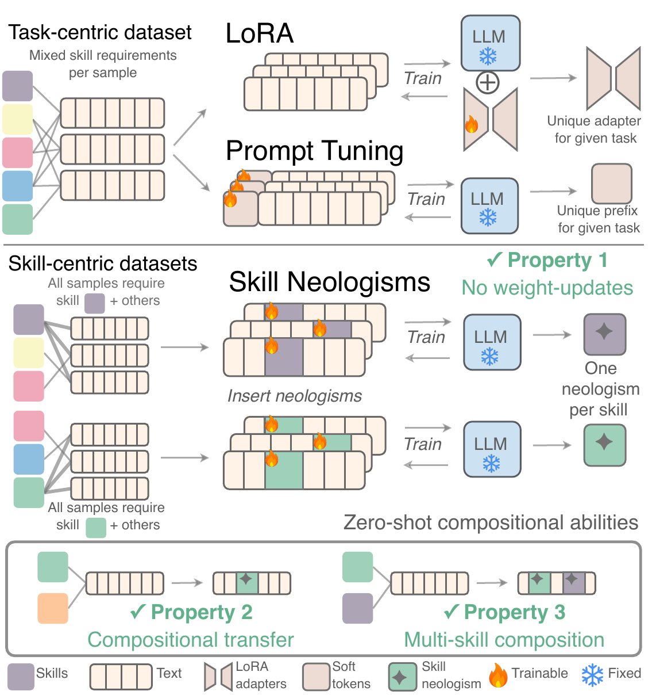
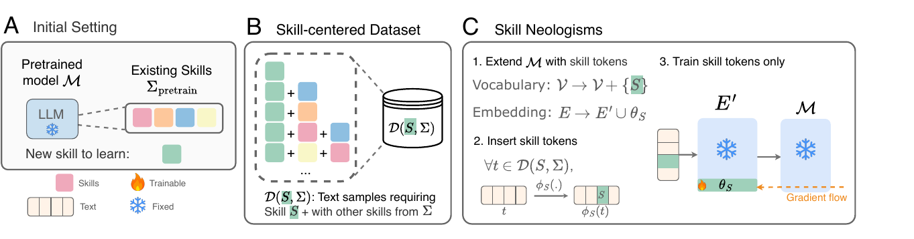
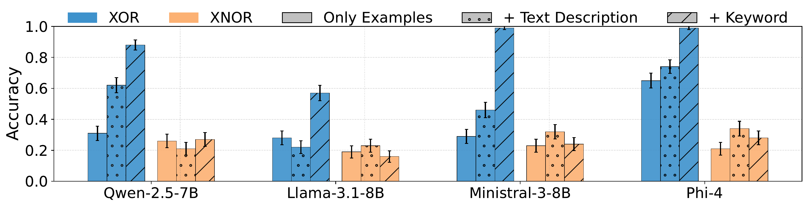
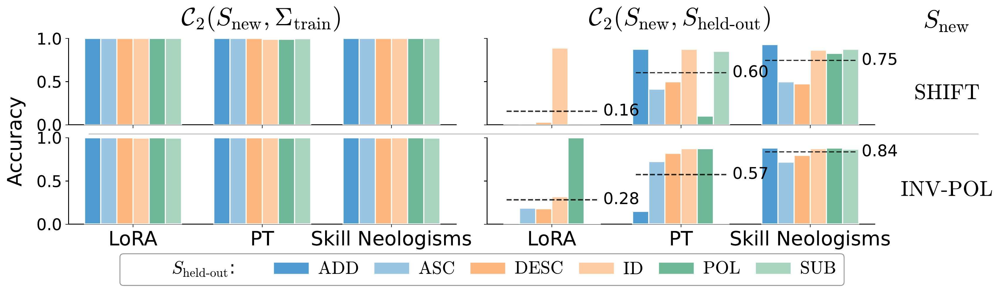
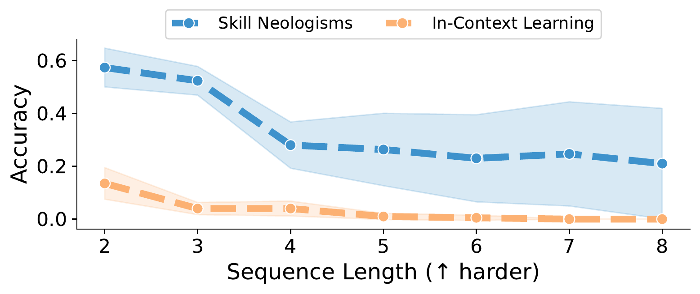
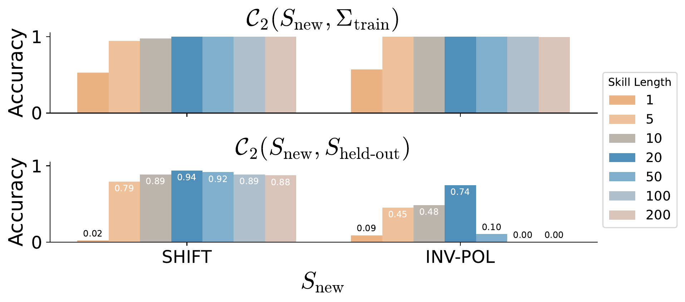
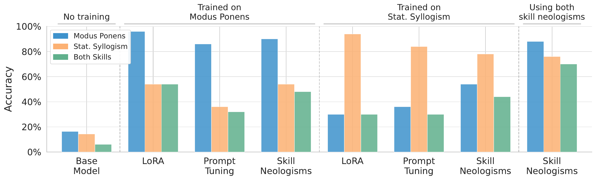

Skill Neologisms: Towards Skill-based Continual Learning
Antonin Berthon1, Nicolás Astorga1, Mihaela van der Schaar1
1University of Cambridge
ICML 2026, Spotlight Poster
TL;DR Skill neologisms are trainable soft tokens added to an LLM's vocabulary that encapsulate a single skill - enabling the frozen model to learn new, composable skills without any weight updates, and letting independently learned skills be combined zero-shot.

Overview of Skill Neologisms.
The method learns vocabulary-level skill tokens from skill-centered datasets, avoiding weight updates while supporting compositional transfer and multi-skill composition.
Motivation: Continually Growing LLM Skills
Modern LLMs demonstrate mastery over an ever-growing range of skills, and the ability to compose them flexibly beyond their training distribution. As LLMs get pushed into more and more domains, a natural question follows: how do we keep adding new skills to a deployed model, in a way that scales?
The existing toolbox falls short:
Fine-tuning / LoRA risks catastrophic forgetting - previously mastered capabilities can disappear, and safety properties can silently erode.
In-context learning composes skills reasonably well in simple settings, but doesn't scale: it is bounded by the model's effective context length, and underperforms parameter-efficient fine-tuning as tasks get harder.
Prompt tuning learns soft tokens prepended to the prompt and can rival full fine-tuning in some settings - but the learned prefixes are typically task-specific, not skill-specific, and cannot be composed or adapted to new settings without retraining.
Skill-based continual learning: three required properties
We call this objective skill-based continual learning, and argue it requires three properties to be practical and scalable:
P1 - No weight updates: new skills are learned without modifying the LLM's parameters, ruling out catastrophic forgetting by construction.
P2 - Compositional transfer: a learned skill composes with the model's existing skills in combinations not seen during training, including out-of-distribution skill combinations.
P3 - Multi-skill composition: multiple independently learned skills can be combined zero-shot, without any joint training on their combination.
Skill Neologisms
Building on the notion of neologisms proposed by Hewitt et al. (2025) for human-machine communication, we propose skill neologisms: vocabulary-level soft tokens trained to encapsulate a single, specific skill.
A skill neologism for skill \(S\) is a set of learnable soft tokens \(\theta_S \in \mathbb{R}^{d_{model} \times l}\), added as new vocabulary entries and embeddings on top of a frozen pretrained model \(\mathcal{M}\):
\[
\mathcal{V}' = \mathcal{V} \cup \{\langle S_1\rangle, \dots, \langle S_l\rangle\}, \qquad
E' = E \cup \theta_S
\]
The tokens are optimized end-to-end, backpropagating through the frozen model, on an \(S\)-centered dataset \(\mathcal{D}(S, \Sigma)\) - a dataset where every sample requires skill \(S\), mixed with other skills \(\Sigma\) the model already masters:
Here, \(\phi_S\) is an insertion function that splices the skill tokens into the text in a semantically sensible place, for example replacing the word or keyword for the skill, or inserting a short instruction like "using \(\langle S\rangle\)".
Examples of insertion functions
Insertion function
Example
Word replacement
[ADD][SHIFT]7283=... becomes [ADD]⟨SHIFT⟩7283=...
Task instruction
Sort these numbers: becomes Sort these numbers using <SORT>:

Skill-centered training. Each new token is trained in contexts where the target skill appears with diverse known skills, while the base LLM remains frozen.
Two design choices distinguish skill neologisms from ordinary prompt tuning, and are what make them composable:
Skill-centered training (not task-centered): every training sample requires the target skill, mixed with a diverse set of other skills. This is the inductive bias that pushes the soft tokens toward encoding the skill itself rather than a specific task.
Vocabulary-level integration: the skill lives as an actual vocabulary element integrated in the context, leveraging the model's own in-context learning ability rather than acting as a fixed prefix.
Together, these two ingredients are hypothesized to produce skill representations general enough to transfer to out-of-distribution skill combinations, and to allow multiple independently trained skill tokens to simply be concatenated into the context at inference time and composed zero-shot.
Training procedure at a glance: extend the vocabulary and embedding matrix with the new skill tokens, then for each epoch and each skill-centered training sample, insert the tokens via \(\phi_S\), compute a standard cross-entropy loss, and update only the skill tokens - the rest of the model stays frozen throughout.
Motivating Observation: Some Tokens Already Behave Like Skills
Before training any new skill tokens, we first check whether pretrained models already show hints that vocabulary elements can encode procedural knowledge.
Intuition: during pretraining, certain tokens are consistently seen in contexts tied to a specific operation. For example, the token "XOR" mostly shows up in text explaining the XOR logical operation. If so, that token might already function like a "skill token" for XOR.
Setup: we evaluate several open-source LLMs (Qwen-2.5-7B, Llama-3.1-8B, Ministral-3-8B, Phi-4) on binary-operation completion tasks (XOR and XNOR on 3-bit sequences), comparing three prompting conditions: only examples, examples plus a natural-language description, and examples plus only the operation's keyword ("XOR" or "XNOR").
XOR is a common word, frequent in pretraining text; XNOR is much rarer, roughly 15x less frequent per Google NGram Viewer. This gives a natural contrast in how much "skill signal" each token could plausibly have picked up during pretraining.

Some pretrained tokens already act like procedural handles. For XOR, the bare keyword can outperform examples-only and text-description prompts; for XNOR, the same effect does not appear.
Result: for XOR, just providing the bare keyword "XOR" substantially beats both the example-only and the text-description conditions - suggesting the token "XOR" has already absorbed procedural knowledge about the operation from pretraining. For XNOR, neither the keyword nor the description helps beyond examples alone: the rarer token has not accumulated enough signal to encode the skill.
Controlled Setup: Algorithmic Skill Composition
To rigorously test Properties 2 and 3, we need a setting with explicit, unambiguous sample-to-skill mappings - natural language is too implicit for that. So we build a synthetic digit-sequence transformation task.
Each sample has the form [OP-1]...[OP-k] x = y, where x is a random digit sequence and y is the result of applying operations OP-1, ..., OP-k to x in sequence.
Skill set
Skills
Role
\(\Sigma_{\text{pretrain}}\)
ASC, DESC, ADD, SUB, POL, REV, ID
Already mastered by the base model
\(S_{\text{new}}\)
SHIFT, INV-POL
New skills, learned via skill neologisms with a frozen base model
\(S_{\text{held-out}}\)
one of \(\Sigma_{\text{pretrain}}\)
Held out of the new skill's training data - used to test OOD composition
Fine-tune a Qwen2.5-0.5B base model via LoRA on compositions of the seven \(\Sigma_{\text{pretrain}}\) operations, across sequence lengths 2-9, with lengths 5, 7, and 9 held out at pretraining time to test length generalization. This gives us \(\mathcal{M}_{\text{pretrain}}\), a model with strong, generalizing mastery of the base skill set.
Freeze \(\mathcal{M}_{\text{pretrain}}\) entirely, and learn skill neologisms for the two new skills SHIFT and INV-POL, training on data that mixes each new skill with a subset of the pretraining skills, holding one pretraining skill out at a time to create an OOD test.
Training sample[ADD][SHIFT]7283=4839
Skill-neologism training sample[ADD]<SHIFT>7283=4839
We compare skill neologisms against two natural baselines: prompt tuning with the same soft token length, and LoRA fine-tuning.
Composing with Held-Out Skills (Property 2)
Question: after learning SHIFT or INV-POL, does the model only work when composed with the specific pretraining skills seen during its training - or does it generalize to a skill it never saw mixed with SHIFT/INV-POL at all?

Skill neologisms transfer best to held-out compositions. All methods solve in-distribution compositions, but skill neologisms retain higher OOD accuracy when the new skill is composed with a held-out skill not seen during training.
Result: all three methods reach near-perfect accuracy in-distribution. But out-of-distribution - composing the new skill with a skill it never saw during training - they diverge sharply: LoRA collapses (0.16 / 0.28 average accuracy), prompt tuning is intermediate (0.60 / 0.57), and skill neologisms hold up best (0.75 / 0.84 average accuracy).
LoRA appears to overfit the training distribution rather than learning a genuinely composable representation of the new skill; skill neologisms' advantage over prompt tuning - despite both optimizing the same number of soft parameters - suggests that embedding the tokens directly into the model's vocabulary gives real additional flexibility for learning composable skill representations. The same pattern holds for 3-skill compositions.
Zero-Shot Composition of Independently Learned Skills (Property 3)
Question: can we take the SHIFT skill neologism and the INV-POL skill neologism - each trained completely independently, never seen together during training - and just drop both into the same prompt to get a model that does both at once?
This is the property that structurally distinguishes skill neologisms from LoRA and prompt tuning: those methods cannot be composed post hoc without retraining on the joint task. As a natural baseline for "zero-shot composition," we compare against in-context learning: providing the frozen base model with \(N \in \{10, 20, 50, 100\}\) examples of each skill directly in-context, \(2N\) examples total, instead of any soft tokens.

Independently learned skill tokens compose zero-shot. Skill neologisms for SHIFT and INV-POL are trained separately, then inserted together at inference time and compared with in-context learning.
Result: skill neologisms significantly and consistently outperform in-context learning across all sequence lengths. The independently trained skill tokens carry over genuinely reusable procedural knowledge that composes zero-shot; in-context learning, by contrast, struggles to extract and combine the relevant patterns purely from examples.
What Makes It Work: Ablations
We ran three ablations to understand why skill neologisms work:
Limited capacity acts as an inductive bias for generalization.
Varying the skill neologism length from \(l=1\) to \(l=200\), OOD accuracy first increases with more capacity, then drops past \(l \approx 20\). Limited parameter capacity appears to act as an inductive bias toward learning a generally composable skill representation, rather than overfitting - echoing the LoRA overfitting pattern seen in Result 1.
More diverse training compositions help.
Training the skill token on more complex compositions, higher \(k_{max}\), generally improves OOD generalization to held-out skills, even for simpler 2-skill test compositions.
Effect of initialization and label noise.
Initializing skill tokens from the mean embedding of the pretrained skill tokens gives a small edge over random initialization, but random init still yields strong OOD composition. Accuracy on single-operation samples is robust to up to around 40% noisy skill labels in the training set, but noise starts to visibly degrade 2- and 3-op OOD composition performance around 20%.

Limited capacity as an inductive bias. OOD accuracy improves with additional token capacity up to a point, then declines as the learned representation becomes easier to overfit.
Does This Hold Up in Natural Language? (Skill-Mix)
Everything so far used a controlled, synthetic setting with unambiguous skill labels - useful for clean measurement, but not obviously representative of realistic language tasks, where skills are far more implicit. As a final validation, we test skill neologisms on Skill-Mix (Yu et al., 2024), a benchmark that asks a model to write a short text illustrating a given list of natural-language skills, such as "metaphor" or "syllogism", on a given topic, graded by a strong LLM (GPT-5) for whether the desired skills are present.
Setup: using Llama3.2-3B-Instruct as the base model, we pick two skills the base model is weak at - modus ponens and statistical syllogism - and train a skill neologism for each independently, mixed with other unrelated Skill-Mix skills during training, but never mixed with each other. We compare against LoRA and prompt tuning trained the same way, and test on queries that require both target skills simultaneously.

Skill neologisms extend to natural-language skills. Using both skill neologisms improves simultaneous success on modus ponens and statistical syllogism despite never training on their combination.
Result: LoRA, prompt tuning, and skill neologisms all reach comparably high accuracy on the specific skill each was trained on - but not on the other, held-out target skill. Only skill neologisms allow the two independently learned skill tokens to simply be inserted together into the prompt, achieving high accuracy on both skills simultaneously, despite never having been trained on their combination.
Limitations and Future Work
Skill-centered dataset construction. The whole approach depends on having, or being able to construct, a dataset where every sample requires the target skill. This is natural in structured or synthetic settings and in domains with existing multi-label annotations, but may be fuzzy or effort-intensive elsewhere.
Soft-token optimization challenges. Skill neologisms inherit prompt tuning's known sensitivities to initialization and hyperparameters, including token length and learning rate, and requires the target skill to be reasonably close to the model’s pretraining distribution.
Compute cost. Despite being far more parameter-efficient than full fine-tuning, training skill tokens still requires backpropagating through the entire frozen model, so cost scales with model size much like fine-tuning does - this may be a real constraint at larger scale.
Open directions: extending skill neologisms to settings where skills are more implicit or fuzzy, improving optimization stability for soft vocabulary tokens, and allowing the model to generate previously learned skill neologisms itself at inference time, rather than requiring them to be inserted externally.
Conclusion
We propose skill neologisms - vocabulary-integrated soft tokens optimized on skill-centered data - as a path toward skill-based continual learning: adding new capabilities to an LLM without touching its weights. Across a controlled algorithmic setting and a more realistic natural-language benchmark, skill neologisms transfer compositionally to skill combinations never seen during training, and let independently learned skills be combined zero-shot - properties that existing approaches like LoRA and prompt tuning structurally lack. These properties suggest that skill neologisms are a promising direction for scalable skill-based continual learning.
BibTeX
@inproceedings{
berthon2026skill,
title={Skill Neologisms: Towards Skill-based Continual Learning},
author={Antonin Berthon and Nicol{\'a}s Astorga and Mihaela van der Schaar},
booktitle={Forty-third International Conference on Machine Learning},
year={2026},
}